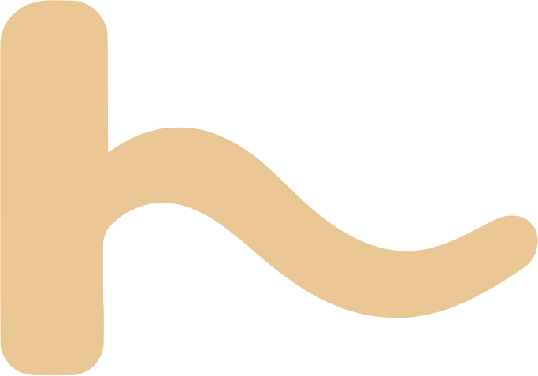

Tous les spotsComment ça marche
Houlalah ne produit pas ses propres modèles : il croise plusieurs prévisions publiques, les corrige avec des mesures réelles et dit ce qu'il en est de leur fiabilité. Voici d'où vient chaque chiffre.
La houle : plusieurs modèles croisés
La hauteur, la période et la direction de la houle viennent d'un mélange de modèles : Météo-France MFWAM, DWD EWAM, ECMWF WAM et NOAA GFS-Wave (via Open-Meteo), plus le modèle côtier Ifremer MARC (grille d'environ 3,7 km sur le golfe de Gascogne). Quand les modèles disent la même chose, l'accord est fort. Quand ils divergent, l'écart est affiché sous le grand chiffre du haut de page.
Le vent
Le vent vient du modèle Météo-France AROME, comparé à DWD ICON, NOAA GFS et ECMWF IFS. AROME ne va pas au-delà de 4 jours environ : au-delà, la prévision bascule sur ICON, et la fiabilité baisse.
Les bouées : la mesure réelle
- Bouée Gascogne (Météo-France, 62001) : au large, à environ 300 km de la côte. Elle voit la houle arriver bien avant la côte. Elle mesure toutes les heures, avec environ 1 h de retard. Quand les modèles s'écartent de sa mesure, nos prévisions sont corrigées sur les 24 heures suivantes.
- Bouées côtières CANDHIS (Cerema) : Cap Ferret, Anglet, Saint-Jean-de-Luz. Mesures toutes les 30 minutes, fraîches. Le site compare la mesure de la bouée la plus proche du spot avec sa prévision. Ces mesures en temps réel ne sont pas validées.
La marée et le coefficient
Les horaires de pleine et de basse mer sont calculés par méthode harmonique à partir de mesures officielles des marégraphes REFMAR (Shom) à Socoa et à Boucau-Bayonne. Sur des mesures indépendantes, l'écart moyen d'heure est d'environ 5 minutes. Le coefficient est calculé à partir de la marée de Brest, avec un écart moyen d'environ 2 points par rapport à la valeur officielle. Ces valeurs sont indicatives : à vérifier avant de sortir.
La fiabilité, mesurée
À chaque mise à jour, les prévisions sont archivées. Elles sont ensuite comparées à la mesure réelle de la bouée à 24, 48, 72 et 96 heures d'avance, sur les 30 derniers jours. Le résultat apparaît en bas de la page d'accueil dès qu'il y a assez de mesures. Houlalah ne dit jamais si les conditions sont « bonnes » : c'est à toi de juger, avec des données dont on connaît la précision.
Mises à jour et limites
Les prévisions sont recalculées toutes les 3 heures. Ce sont des estimations : un modèle ne voit ni un banc de sable qui a bougé ni une rafale locale. Elles ne remplacent ni un coup d'œil sur place ni les consignes de sécurité des plages surveillées.